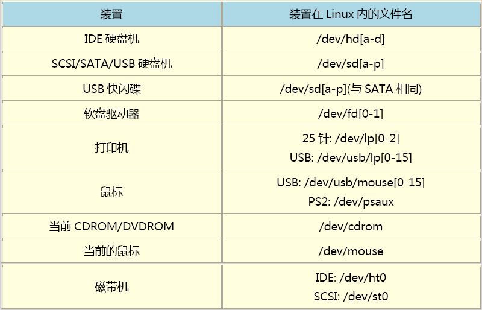

Chapter 0
计算机五个部分：输入单元、 输出单元、CPU内部的控制单元、算数逻辑单元与主存储器
容量1GB=1024^3，速度1GHz=1000^3
Intel主板上的芯片组：北桥：负责链接速度较快的CPU、主存储器和显示适配器等组件，为系统总线，速度FSB，总线带宽FSB×总线宽度：每秒可传输最大数据量；南桥：负责连接速度较慢的周边接口如硬盘，为I/O总线；
AMD主板：无南北桥，将内存控制组件整合到CPU中。
不同主板支持CPU不同。
CPU种类：精简指令集 (RISC) ，复杂指令集 (CISC) 系统。
CPU频率：外频：与外部各组件传输数据的速度；外频×倍频=主频。Word size：32/64位，CPU每次能处理的数据量。
内存：DRAM，断电丢失。外频与CPU的外频相同时最佳。
DDR：一次工作周期内2次数据传输。
二级缓存：L2 cache，CPU内部，为SRAM。
Firmware: 如BIOS，ROM/EEPROM内。
PCI：适配卡。
显卡：VGA，内有3D加速芯片GPU。PCI-Express是新的显卡规格，带宽速度大。全彩的每个像素占用3Bytes容量。显存32MB以上。
IDE/SATA：磁盘，台式机3.5 inch，手提2.5寸。上有缓冲存储器。Sector 512B, 组成圆环track, 不同磁盘上同一位置的track组成Cylinder，分割磁盘最小单位。
网卡：Ethernet规格。网络头：RJ-45。8M/1M ADSL传输速度=1Mbyte/s的上传和125Kbytes/s的下载。如Realtek 的RTL8139。
I/O地址：硬件门牌。
IRQ：中断。
电源：最大500W。20/24pin接口。
ASCII: 英文编码表，1byte，256种。中文Big5，2bytes。Unicode：因特网用通用编码。
OS Kernel：驱动硬件。在内存中受保护，并且常驻。核心功能如下：
System call：OS提供，用以开发软件的接口。
Process control，Memory management, Filesystem management, Device drivers。
查阅组件型号：查看/cat/proc/cpuinfo,或lspci
Chapter 1
GNU重要软件：Emacs, GCC, glibc, Bash shell。
GUI：XFree86的X Window System。
Assembly Language：汇编语言。
POSIX：规范核心与应用程序之间的接口。
版本号：偶数为稳定版。
Linux distribution：Kernel + Softwares + Tool
Apache：网页服务器。
Postfix/sendmail：电子邮件服务器。
Samba：文件服务器。
LSB：Linux开发标准。
FHS：目录架构标准。
安装方式：不同Distribution的主要区别，分RPM和dpkg，Tarball原始码。
Linux可以多人同时在线。
GUI：X Window，KDE，GNOME。
查看核心版本：uname –r可查看Distribution版本，lsb_release –a可查看Linux Standard Base版本。
Chapter 2
网络服务器：WWW, Mail Server, File Server。
Cluster：云计算机平行运算能力。
Pidgin：实时通讯软件。
各个Distribution。（鸟哥私房菜P68）
软件列表（鸟哥私房菜P68）
Free Maid：组织结构绘制软件。
Dia：类似Visio。
GanttProject：时程表绘制。
基础概念：使用者/群组，权限，程序。
文书编辑器vi：会被很多软件调用。
Shell：文字接口软件。有正则表示法，管线命令，数据流重导向。Shell scripts也重要。
FAQ和How-To：安装软件的帮助文档放在/usr/share/doc/下，或http://www.linux.org.tw/CLDP/或http://www.tldp.org/
提示的网络服务错误信息，可到/var/log/里查看。
How To: http://www.tldp.org
Chapter 3
图形接口运算：X Window内的Open GL。
RAID：多个磁盘接成阵列。
查看硬件支持：（鸟哥私房菜P80）。
硬件配置在linux下都是档案。

网卡：/dev/eth[0-n]。
磁盘分区：Partition在windows下为C, D, E，Linux下SATA按侦查到的顺序分配sda，sdb。
磁盘第一个扇区，记录：
1. Master Boot Record (MBR) ，安装开机管理程序。
2. Partition table。总共记录4个Primary+ Extended，记作P1: /dev/hda1。Extended内的logic partition记录在额外的扇区，从/dev/hda5开始。
开机流程：BIOS->MBR->boot loader->核心档案。
CMOS记录硬件参数的存储器。
BIOS开机时执行的第一个程序，找到MBR。然后执行boot loader。
Boot loader提供多重引导开机选单Grub，载入核心档案，转交其他loader。
Grub软件：开机启动选单软件。
文本登录后的程序就是Shell。
Mirror site：当地的下载较快的分流。
FTP：客户端如Filezilla，可断点续传。传输再怎么地下化也容易被捉到。
NAT：IP分享器，内网多用户连接外网时对外的IP分享给内部。
SAMBA：加入Windows网络邻居。
邮件服务：Sendmail和Postfix等Mail Server软件。
WWW服务器：Web功能，许多软件用WWW作为显示接口。Apache软件提供WWW网站功能。
DHCP：客户端自动获取IP功能。
Proxy：有效解决带宽不足问题。
硬盘问题有些可用fsck软件解决。
Directory tree：从root directory /开始分支。
需mount和硬盘档案联系。mnt/内的文件在硬盘上可能在别的地方。
挂载：利用目录作为进入点，将磁盘分区的数据放入该目录。
如/挂载到P1，/home挂载到P2，则/home下的文件都在P2下，而/etc就在P1下。
光盘内容：/media/cdrom。
分区：一个分区内格式化等操作不影响别的分区。考虑所需容量，读写频繁度。
/：根目录。
/Swap：内存置换空间，即虚拟内存，无需挂载。理论上为1.5～2倍内存。
/usr: 软件信息Unix software resource。
/home：不同使用者的数据存放。
/var：网络相关。
/boot：开机读取磁盘大小用，将启动扇区规范在1024个磁柱内，避免磁盘太大读取错误造成的无法开机。100MB就够，须在最前，强制成主要分割区。
Quota：磁盘配额，分割磁盘后再改动。
当机原因：除软件问题，可能机箱温度，CPU温度，不同厂商内存，电源供应。
Chapter 4
无法使用DHCP取得IP，参数设定为： IP: 192.168.1.100, mask：255.255.255.0。
网卡卡号：Hardware address: 08:00:27:B9:01:BC
主机名：通常为主机名.网域名，可以有句号，www.vbird.tsai。
RAID：硬盘特殊应用，软件仿真磁盘阵列。建立两个硬盘分区然后合并，/dev/md0，
LVM：弹性调整系统容量。
Ext3：文件系统类型，有日志记录。系统默认。
传统的文件格式为：ext2。Journaling有ext3及Reiserfs等。
Vfat：linux，windows共用文件系统。
Grub装载在MBR里。可以设置开机密码，但这样就无法远程登录了。
系统安装过程写入/root/install.log，选择的软件写入/root/anaconda-ks.cfg。
安装包分为多个档案，按需安装。
memtest86：内存压力测试。
因硬件配置无法安装：DVD开机时，boot: linux nofb apm=off acpi=off pci=noacpi
apm, acpi：电源管理模块；nofb：取消显卡缓存侦测；
SELinux：Access control设定，不是防火墙，推荐安装。
Kdump：核心出错是将内存写入档案。较消耗硬盘空间。
Windows双系统时，Linux所在分区在windows下不要挂载，以免被格式化。